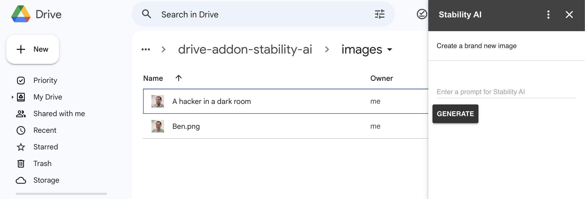

Stability.ai offers a publicly-available service to create and edit images using artificial intelligence. The service is very intuitive to use and yields great results. It is similar to the Dall-E service from OpenAI, which I've previously written about here and here.
In this post, we will create a Google Drive AddOn that will interact with the Stability.AI API to create and edit images.
Setup
To use Stability.ai, you need to create an account and get your API key. To start, head to DreamStudio.ai and click on "Login". The easiest is to login with your Google credentials. After that, click on your name at the top-right corner. You'll be taken to page that lists your API key. Copy it and save it somewhere safe.
To create a Google Workspace AddOn, you need to create a new Google Cloud Platform project and associate it with your Google Apps script file. So head to the GCP console, create an OAuth Consent screen, and enable the Google Drive API. Watch the video above if you don't know how to perform these steps.
Next, create a Google Apps Script file and click on the Gear icon to access the project settings. Tick the box "Show 'appsscript.json' manifest file in editor." Under "Google Cloud Platform (GCP) Project," click "Change project" and paste in your GCP project number which you can find on the project dashboard. Lastly, under "Script Properties," click "Add script property." For the property name, enter "stabilityApiKey", and in the value box paste the Stability AI key that you copied earlier.
The manifest file
We need to let Google Apps Script know about our AddOn. We do this by adding entries into the manifest file. In Google Apps Script, click on "appsscript.json" in the Editor, and paste in the following values:
{
"timeZone": "whatever-your-locale-is",
"dependencies": {},
"exceptionLogging": "STACKDRIVER",
"runtimeVersion": "V8",
"urlFetchWhitelist": ["https://api.stability.ai/"],
"oauthScopes": [
"https://www.googleapis.com/auth/script.external_request",
"https://www.googleapis.com/auth/drive",
"https://www.googleapis.com/auth/drive.addons.metadata.readonly",
],
"addOns": {
"common": {
"name": "Stability AI",
"logoUrl": "link-to-an-icon-file"
},
"drive": {
"homepageTrigger": { "runFunction": "genHomeCard", "enabled": true },
"onItemsSelectedTrigger": { "runFunction": "refreshAddOn" }
}
}
}
The top four attributes should already be in your file; we are not changing them. We need to let the AddOn know which URLs it's permitted to access, and we do so using the "urlFetchWhitelist" attribute. We'll be calling the stability API endpoints. Be sure to include the trailing forward slash.
The "oauthScopes" tell Apps Script what areas of Google Workspace the AddOn is permitted to access. We need the ability to issue UrlFetchApp calls and read/write files in Google Drive.
The "addOns" sections include two sub-sections: "common" defines the name of the AddOn and a link to an icon that will be displayed in Google Drive. You can host an icon file on Google Drive or someplace else. The "drive" section defines two functions that will run whenever the AddOn home page loads, and whenever the user selects a file in Google Drive.
Rendering the AddOn
In order to show the AddOn, we need to build a basic UI inside the "genHomeCard" function. So create a function with that name in your "Code.gs" file, and enter the following:
function genHomeCard(e) {
const selected = getSelectedFile(e);
const title = selected.title
? `Create image for ${selected.title}`
: 'Create a brand new image';
var promptInput = CardService.newTextInput()
.setFieldName('prompt')
.setTitle('Enter prompt for Stability AI');
const action = CardService.newAction().setFunctionName('onCreateImage');
const button = CardService.newTextButton()
.setText('Generate')
.setTextButtonStyle(CardService.TextButtonStyle.FILLED)
.setBackgroundColor('#333333')
.setOnClickAction(action);
return CardService.newCardBuilder()
.setName('Stability AI')
.setHeader(CardService.newCardHeader().setTitle(title))
.addSection(
CardService.newCardSection().addWidget(promptInput).addWidget(button)
)
.build();
}
function getSelectedFile(e){
return {title: 'temp title'};
}
Above, the function gets information about the selected file (if any) using the getSelectedFile function that we will define momentarily. We then create a title for our AddOn based on whether a file is selected. Next we define an input box and a submit button for our UI. We define an action that declares onCreateImage function, which will run whenever the button is clicked.
Lastly, we create a new card that represents our AddOn home page. We set the header with the title, and load in the two widgets. We then build the card and return it; by returning it we allow Google Drive to render the UI in the Drive window.
Deploying the AddOn
As I mentioned above, this AddOn will only be available in your development account. To do so, click on the blue "Deploy" button. Make sure that "Addon" is selected under Type. Click Deploy. Then click on Deploy again, and select "Test deployment". Click the "Install" button and then done. Now, if you reload the Google Drive window, your icon should appear on the right-hand side. Click on it, should pop-up the AddOn like this:
Responding to file selection
At the moment, if you select a file in Google Drive when the AddOn is open, you will encounter an error that the refreshAddOn function isn't found. This is because we declared it in our manifest file, and Google Workspace is looking to fire it in response to a file selection. So let's add that function:
function refreshAddOn(e) {
CardService.newNavigation().popCard();
return genHomeCard(e);
}This simple function removes the existing home page card and recreates it. Now information about the selected file is available in the "e" object that Apps Script passes to the function automatically, so we can use it. Let's revise the getSelectedFile function:
function getSelectedFile(e) {
if (!e.drive.selectedItems) {
return { error: 'No item selected' };
}
if (e.drive.selectedItems.length > 1) {
return { error: 'Multiple items selected' };
}
if (!e.drive.selectedItems[0].mimeType.startsWith('image')) {
return { error: 'Non-image file selected' };
}
return {
title: e.drive.selectedItems[0].title,
file: DriveApp.getFileById(e.drive.selectedItems[0].id),
};
}Above, we get the data about the selected file by looking at e.drive.selectedItems. We perform several checks to ensure only one image file is selected. We then return its name and the file itself.
If you know select and unselect a file in the drive while the AddOn is open then you should see the title of the home page change accordingly.
Responding to submit events
We need the code that is associated with the button action:
function onCreateImage(e) {
if (!e.formInputs.prompt) {
return;
}
let notificationMessage;
const text = e.formInputs.prompt[0];
const selected = getSelectedFile(e);
const resp = callStability(text, selected.file);
if (resp.error) {
notificationMessage = resp.error;
} else {
notificationMessage = saveFile(resp.dataString, selected.file, text);
}
return CardService.newActionResponseBuilder()
.setNotification(CardService.newNotification().setText(notificationMessage))
.build();
}Above, we check that the value of the input box is available in the "e" object. If not then we return. We can the text and the selected file. We call the Stability API (below) and render a notification according to the result. if everything is OK then we call saveFile which will save the file in our Google Drive.
Calling Stability AI
We now need a function that can interact with the Stability.ai API:
function callStability(text, file) {
const scriptProps = PropertiesService.getScriptProperties();
const apiKey = scriptProps.getProperty('stabilityApiKey');
const engineId = 'stable-diffusion-xl-beta-v2-2-2';
let apiUrl = 'https://api.stability.ai/v1/generation/' + engineId + '/';
const options = {
method: 'POST',
headers: {
Authorization: `Bearer ${apiKey}`,
},
muteHttpExceptions: true,
};
let payload;
if (!file) {
apiUrl += 'text-to-image';
options['headers']['Content-Type'] = 'application/json';
payload = {
height: 512,
width: 512,
text_prompts: [{ text, weight: 0.5 }],
steps: 50,
style_preset: 'comic-book',
samples: 1,
};
options.payload = JSON.stringify(payload);
} else {
apiUrl += 'image-to-image';
// options['headers']['Content-Type'] = 'multipart/form-data';
payload = {
// height: '512',
// width: '512',
style_preset: 'comic-book',
samples: '1',
steps: '50',
'text_prompts[0][text]': text,
'text_prompts[0][weight]': '0.5',
init_image: file.getBlob(),
image_strength: '0.5',
};
options.payload = payload;
}
// console.log(JSON.stringify(options, null, 2));
const response = UrlFetchApp.fetch(apiUrl, options);
const content = response.getContentText();
const jsn = JSON.parse(content);
if (!jsn.artifacts) {
console.log(JSON.stringify(jsn, null, 2));
return { error: jsn.message };
}
return { dataString: jsn.artifacts[0].base64 };
}Above, we get our API key from the script property. We define the API url. We then set the options object and its payload attribute based on whether we pass in a selected file or not. If there's no file then we will generate a brand new image. Otherwise, we will create an image based on the image and the prompt text.
We pass in several attributes like the dimensions of the file, the prompt, and the file itself. We call the API end point and parse out the result.
Saving the new file
All we need to do now is the save the new file in Google Drive:
function saveFile(data, file, text) {
const decoded = Utilities.base64Decode(data, Utilities.Charset.UTF_8);
const blob = Utilities.newBlob(decoded, 'image/png', text);
// Enable Drive API in the GCP project in order to use DriveApp
const newFile = DriveApp.createFile(blob);
if (file) {
// If a user selected a file then the current folder
// can be determined, and the file can be moved there
const folder = file.getParents().next();
newFile.moveTo(folder);
return 'File saved';
} else {
return 'File saved at the root folder';
}
}Above, we get the data in base64, the original file (if one exists), and the prompt. We decode the string, and create a new blob from the resulting byte array. We save the blob as a file. Now, if the original file is present then we derive its folder and move the file there. Otherwise, we store the file at the root folder.
That's all there is to it. We kept thing pretty basic here and used static values for most of the Stability AI parameters. You can make the UI more robust by adding more fields for these parameters so that the user can change them without accessing the code.
Happy stabilizing!